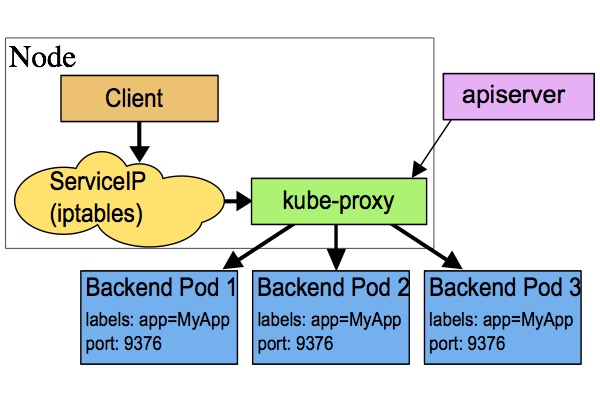

Service
Table of Contents
Kubernetes Pod 是有生命周期的，它们可以被创建，也可以被销毁，然而一旦被销毁生命就永远结束。 通过 ReplicationController 能够动态地创建和销毁 Pod
每个 Pod 都会获取它自己的 IP 地址，即使这些 IP 地址不总是稳定可依赖的 这会导致一个问题：在 Kubernetes 集群中，如果一组 Pod（称为 backend）为其它 Pod （称为 frontend）提供服务，那么那些 frontend 该如何发现，并连接到这组 Pod 中的哪些 backend 呢？
概念
Kubernetes Service 定义了这样一种抽象：
- 一个 Pod 的 逻辑分组
- 一种可以 访问 它们的 策略 ，通常称为微服务
- 这一组 Pod 能够被 Service 访问到，通常是通过 Label Selector 实现的
举个例子，考虑一个图片处理 backend，它运行了3个副本，这些副本是可互换的，而 frontend 不需要关心它们调用了哪个 backend 副本 然而组成这一组 backend 程序的 Pod 实际上可能会发生变化，frontend 客户端不应该也没必要知道，而且也不需要跟踪这一组 backend 的状态 Service 定义的抽象能够解耦这种关联
- 对 Kubernetes 集群中的应用，Kubernetes 提供了简单的 Endpoints API ，只要 Service 中的一组 Pod 发生 变更 ， 应用程序 就会 被更新
- 对非 Kubernetes 集群中的应用，Kubernetes 提供了基于 VIP 的 网桥 的方式 访问 Service ，再由 Service 重定向 到 backend Pod
定义
一个 Service 在 Kubernetes 中是一个 REST 对象 ，和 Pod 类似。 像所有的 REST 对象一样， Service 定义可以基于 POST 方式，请求 apiserver 创建新的实例
例如，假定有一组 Pod，它们对外暴露了 9376 端口，同时还被打上 "app=MyApp" 标签
kind: Service
apiVersion: v1
metadata:
name: my-service
spec:
selector:
app: MyApp
ports:
- protocol: TCP
port: 80
targetPort: 9376
上述配置将创建一个名称为 my-service 的 Service 对象 ，它会将请求代理到使用 TCP 端口 9376 ，并且具有标签 app=MyApp 的 Pod 上：
- 这个 Service 将被指派一个 IP 地址（通常称为 Cluster IP ），它会被 服务的代理 使用
- 该 Service 的 selector 将会持续评估，处理结果将被 POST 到一个名称为 my-service 的 Endpoints 对象 上
Service 能够将一个接收端口映射到任意的 targetPort，默认情况下，targetPort 将被设置为与 port 字段相同的值 更有趣的是，targetPort 可以是一个字符串，引用了 backend Pod 的一个端口的名称，但是，实际指派给该端口名称的端口号，在每个 backend Pod 中可能并不相同 对于部署和设计 Service ，这种方式会提供更大的灵活性。例如，可以在 backend 软件下一个版本中，修改 Pod 暴露的端口，并不会中断客户端的调用
Kubernetes Service 支持 TCP 和 UDP 协议，默认 TCP 协议
没有 selector 的 Service
Service 抽象了该如何访问 Kubernetes Pod，但也能够抽象其它类型的 backend，例如：
- 希望在生产环境中使用外部的数据库集群，但测试环境使用自己的数据库
- 希望服务指向另一个 Namespace 中或其它集群中的服务
- 正在将工作负载转移到 Kubernetes 集群，和运行在 Kubernetes 集群之外的 backend
在任何这些场景中，都能够定义没有 selector 的 Service ：
kind: Service
apiVersion: v1
metadata:
name: my-service
spec:
ports:
- protocol: TCP
port: 80
targetPort: 9376
由于这个 Service 没有 selector，就不会创建相关的 Endpoints 对象。可以手动将 Service 映射到指定的 Endpoints：
kind: Endpoints
apiVersion: v1
metadata:
name: my-service
subsets:
- addresses:
- ip: 1.2.3.4
ports:
- port: 9376
注意：Endpoint IP 地址不能是 loopback（ 127.0.0.0/8 ）、 link-local（ 169.254.0.0/16 ）、或者 link-local 多播（ 224.0.0.0/24 ）
访问没有 selector 的 Service，与有 selector 的 Service 的原理相同
请求将被路由到用户定义的 Endpoint（该示例中为 1.2.3.4:9376）
ExternalName Service 是 Service 的特例，它没有 selector，也没有定义任何的端口和 Endpoint。相反地，对于运行在集群外部的服务，它通过返回 该外部服务的别名 这种方式来提供服务：
kind: Service apiVersion: v1 metadata: name: my-service namespace: prod spec: type: ExternalName externalName: my.database.example.com
当查询主机 my-service.prod.svc.CLUSTER时，集群的 DNS 服务将返回一个值为 my.database.example.com 的 CNAME 记录 。访问这个服务的工作方式与其它的相同，唯一不同的是重定向发生在 DNS 层，而且不会进行代理或转发
如果后续决定要将数据库迁移到 Kubernetes 集群中，可以启动对应的 Pod，增加合适的 Selector 或 Endpoint，修改 Service 的 type
VIP 和 Service 代理
在 Kubernetes 集群中，每个 Node 运行一个 kube-proxy 进程 ：负责为 Service 实现了一种 VIP 虚拟 IP 的形式，而不是 ExternalName 的形式
在 Kubernetes v1.0 版本，代理完全在 userspace，Service 是 “4层”（TCP/UDP over IP）概念
在 Kubernetes v1.1 版本，新增了 iptables 代理，但并不是默认的运行模式。新增了 Ingress API（beta 版），用来表示 “7层”（HTTP）服务
从 Kubernetes v1.2 起，默认就是 iptables 代理
在 Kubernetes v1.8.0-beta.0 中，添加了ipvs代理
userspace 代理模式
- kube-proxy 会 监视 Kubernetes master 对 Service 对象 和 Endpoints 对象 的 添加 和 移除
- 对每个 Service，它会在本地 Node 上 打开 一个 端口 （ 随机选择）
- 任何连接到 代理端口 的请求，都会被代理到 Service 的 backend Pods 中的某个上面（如 Endpoints 所报告的一样）
- 使用哪个 backend Pod，是基于 Service 的 SessionAffinity 来确定的
- 它安装 iptables 规则 ，捕获到达该 Service 的 clusterIP （虚拟 IP）和 Port 的 请求 ，并 重定向 到 代理端口
代理端口 再 代理请求 到 backend Pod ，网络返回的结果是，任何到达 Service 的 IP:Port 的请求，都会被代理到一个合适的 backend，不需要客户端知道关于 Kubernetes、Service、或 Pod 的任何信息

默认的策略是，通过 round-robin 算法来选择 backend Pod
实现基于客户端 IP 的会话亲和性，可以通过设置 service.spec.sessionAffinity 的值为 "ClientIP" （默认值为 "None"）
iptables 代理模式
- kube-proxy 会监视 Kubernetes master 对 Service 对象和 Endpoints 对象的添加和移除
- 对每个 Service ，它会安装 iptables 规则 ，从而 捕获 到达该 Service 的 clusterIP （虚拟 IP）和 端口 的请求
- 将请求 重定向 到 Service 的一组 backend 中的 某个 上面
- 对于每个 Endpoints 对象，它也会安装 iptables 规则 ，这个规则会 选择 一个 backend Pod
和 userspace 代理类似，网络返回的结果是，任何到达 Service 的 IP:Port 的请求，都会被代理到一个合适的 backend，不需要客户端知道关于 Kubernetes、Service、或 Pod 的任何信息。
这应该比 userspace 代理更快、更可靠。然而，不像 userspace 代理，如果初始选择的 Pod 没有响应，iptables 代理不能自动地重试另一个 Pod，所以它需要依赖 readiness probes

默认的策略是， 随机 选择一个 backend
实现基于客户端 IP 的会话亲和性，可以将 service.spec.sessionAffinity 的值设置为 "ClientIP" （默认值为 "None"）
ipvs 代理模式
- kube-proxy会监视Kubernetes Service对象和Endpoints
- 调用 netlink 接口以相应地 创建 ipvs规则
- 定期与Kubernetes Service对象和Endpoints对象同步ipvs规则，以确保ipvs状态与期望一致
- 访问服务时， 流量 将被 重定向 到其中一个 后端Pod
与 iptables 类似，ipvs基于 netfilter 的 hook 功能，但使用 哈希表 作为 底层数据结构 并在 内核空间 中工作
这意味着ipvs可以更快地重定向流量，并且在同步代理规则时具有更好的性能

此外，ipvs为 负载均衡算法 提供了更多选项，例如：
- rr：轮询调度
- lc：最小连接数
- dh：目标哈希
- sh：源哈希
- sed：最短期望延迟
- nq： 不排队调度
注意： ipvs模式假定在运行kube-proxy之前在节点上都已经安装了IPVS内核模块
当kube-proxy以ipvs代理模式启动时，kube-proxy将验证节点上是否安装了IPVS模块，如果未安装，则kube-proxy将回退到iptables代理模式
多端口 Service
很多 Service 需要暴露多个端口。对于这种情况，Kubernetes 支持在 Service 对象 中定义多个端口。 当使用多个端口时，必须给出所有的端口的名称，这样 Endpoint 就不会产生歧义，例如：
kind: Service
apiVersion: v1
metadata:
name: my-service
spec:
selector:
app: MyApp
ports:
- name: http
protocol: TCP
port: 80
targetPort: 9376
- name: https
protocol: TCP
port: 443
targetPort: 9377
选择自己的 IP 地址
在 Service 创建的请求中，可以通过设置 spec.clusterIP 字段来 指定 自己的集群 IP 地址
比如，希望替换一个已经存在的 DNS 条目，或者遗留系统已经配置了一个固定的 IP 且很难重新配置
用户选择的 IP 地址必须合法，并且这个 IP 地址在 service-cluster-ip-range CIDR 范围内，这对 API Server 来说是通过一个标识来指定的
如果 IP 地址不合法，API Server 会返回 HTTP 状态码 422，表示值不合法
为何不使用 round-robin DNS？
一个不时出现的问题是，为什么都使用 VIP 的方式，而不使用标准的 round-robin DNS
有如下几个原因：
- 长久以来，DNS 库都没能认真对待 DNS TTL、缓存域名查询结果
- 很多应用只查询一次 DNS 并缓存了结果
- 就算应用和库能够正确查询解析，每个客户端反复重解析造成的负载也是非常难以管理的
尽力阻止用户做那些对他们没有好处的事情，如果很多人都来问这个问题，可能会选择实现它
服务发现
Kubernetes 支持2种基本的服务发现模式： 环境变量 和 DNS
环境变量
当 Pod 运行在 Node 上，kubelet 会为每个 活跃的 Service 添加 一组 环境变量 。 它同时支持 Docker links 兼容 变量 、简单的 {SVCNAME}_SERVICE_HOST 和 {SVCNAME}_SERVICE_PORT 变量
这里 Service 的名称需大写，横线被转换成下划线
举个例子，一个名称为 "redis-master" 的 Service 暴露了 TCP 端口 6379，同时给它分配了 Cluster IP 地址 10.0.0.11，这个 Service 生成了如下环境变量：
REDIS_MASTER_SERVICE_HOST=10.0.0.11 REDIS_MASTER_SERVICE_PORT=6379 REDIS_MASTER_PORT=tcp://10.0.0.11:6379 REDIS_MASTER_PORT_6379_TCP=tcp://10.0.0.11:6379 REDIS_MASTER_PORT_6379_TCP_PROTO=tcp REDIS_MASTER_PORT_6379_TCP_PORT=6379 REDIS_MASTER_PORT_6379_TCP_ADDR=10.0.0.11
这意味着需要有顺序的要求：Pod 想要访问的任何 Service 必须在 Pod 自己之前被创建，否则这些环境变量就不会被赋值 DNS 并没有这个限制
DNS
一个可选 集群插件 是 DNS 服务器 。DNS 服务器 监视 着 创建 新 Service 的 Kubernetes API，从而为每一个 Service 创建 一组 DNS 记录 。如果整个集群的 DNS 一直被启用，那么所有的 Pod 应该能够自动对 Service 进行名称解析
例如，有一个名称为 "my-service" 的 Service，它在 Kubernetes 集群中名为 "my-ns" 的 Namespace 中，为 "my-service.my-ns" 创建了一条 DNS 记录 在名称为 "my-ns" 的 Namespace 中的 Pod 应该能够简单地通过名称查询找到 "my-service" 在另一个 Namespace 中的 Pod 必须限定名称为 "my-service.my-ns" 这些名称查询的结果是 Cluster IP
Kubernetes 也支持对 端口名称 的 DNS SRV (Service) 记录
如果名称为 "my-service.my-ns" 的 Service 有一个名为 "http" 的 TCP 端口，可以对 "_http._tcp.my-service.my-ns" 执行 DNS SRV 查询，得到 "http" 的端口号
Kubernetes DNS 服务器是 唯一 的一种能够 访问 ExternalName 类型的 Service 的方式
Headless Service
有时不需要或不想要负载均衡，以及单独的 Service IP。遇到这种情况，可以通过指定 Cluster IP spec.clusterIP 的值为 None 来创建 Headless Service
这个选项允许开发人员自由寻找他们自己的方式，从而降低与 Kubernetes 系统的耦合性 应用仍然可以使用一种自注册的模式和适配器，对其它需要发现机制的系统能够很容易地基于这个 API 来构建
对这类 Service 并不会分配 Cluster IP，kube-proxy 不会处理它们，而且平台也不会为它们进行负载均衡和路由
DNS 如何实现自动配置，依赖于 Service 是否定义了 selector
配置 Selector
如果定义了 selector 的 Headless Service， Endpoint 控制器 在 API 中创建了 Endpoints 记录 ，并且 修改 DNS 配置 返回 A 记录 （地址）
通过这个地址直接到达 Service 的后端 Pod 上
不配置 Selector
对没有定义 selector 的 Headless Service，Endpoint 控制器 不会创建 Endpoints 记录 。 然而 DNS 系统会查找和配置，无论是：
- ExternalName 类型: Service 的 CNAME 记录
- 记录：与 Service 共享一个名称的任何 Endpoints，以及所有其它类型